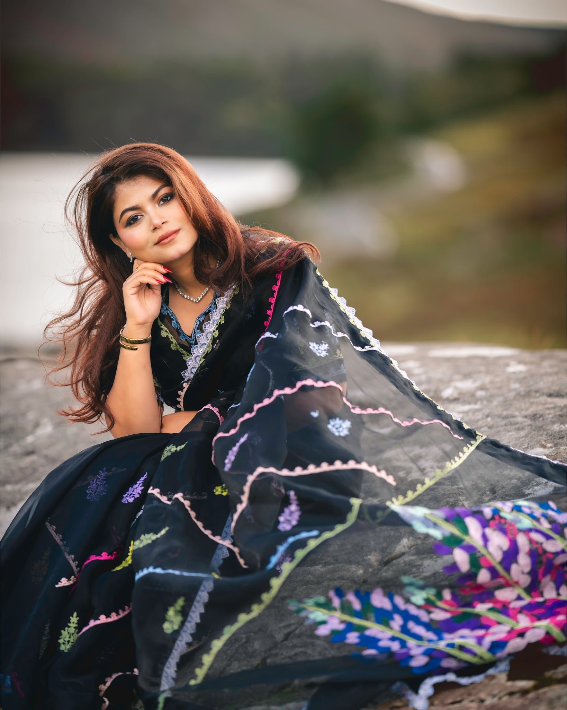

Skip to my links

Habiba Shurovy
Digital Creator, Fashion Designer & Entrepreneur
Find me on Socials!
Instagram
(opens in a new tab)
Facebook
(opens in a new tab)
YouTube
(opens in a new tab)
TikTok
(opens in a new tab)
Featured
Featured
SHORDINDU
Click here!
(opens in a new tab)
Get in touch
Contact me!
Call for Collaboration
Copy email
Share this page